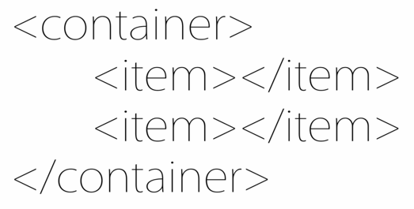
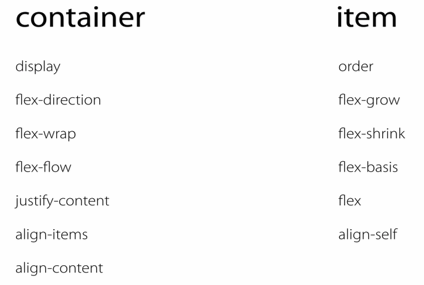
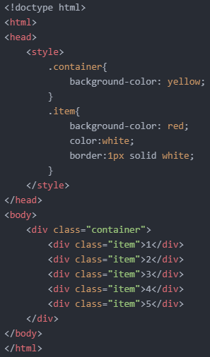
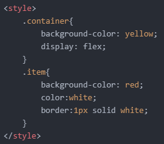
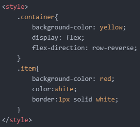
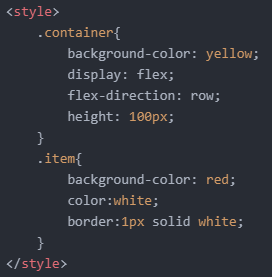

- Flex에 대해 알아보기 1
오늘부터는 'flex'에 대해 알아보겠습니다.
'flex'는 요소들의 크기나 위치를 쉽게 잡아주는 도구입니다.
즉, 다른 속성들에 비해 레이아웃을 더 효과적으로 설정해줄 수 있습니다.
'flex'를 이용하려면 다음과 같은 태그 구조를 따라야 합니다.

마치 'li' 태그가 'ul' 태그나 'ol' 태그와 함께 쓰이는 것처럼요.
참고로 'container' 태그와 'item' 태그가 따로 있는 것은 아니고, 단지 부모 태그와 자식 태그의 관계임을 표현한 것입니다.
그리고 해당 태그들에 적용할 수 있는 속성들은 다음과 같습니다.

우선, 다음과 같이 코드를 작성합니다.

보시다시피, 'div' 태그는 'block level element'이므로 각각의 영역 전체를 사용합니다.
'flex'를 이용하려면 다음과 같이 부모 태그에 'display: flex;' 선언을 해줘야 합니다.

그럼 다음과 같이 자식들의 위치가 바뀔 뿐더러 영역 전체를 사용하지 못하게 됩니다.
그 이유는 간단합니다.
하지만 그 이유를 알기 전에 몇 가지 속성들을 살펴보겠습니다.
우선 첫 번째로 'flex-direction' 속성입니다.
해당 속성의 속성값으로는 'row', 'row-reverse', 'column', 'column-reverse'가 있습니다.
이 중에서 'row-reverse'를 적용해보겠습니다.
다음과 같이 코드를 작성합니다.

위와 같이 우측에서 1~5 순서로 정렬되는 것을 알 수 있습니다.
여기서 알 수 있는 사실이 있습니다.
처음 'flex'를 적용하지 않았을 때는 숫자 1부터 5까지 하나의 열로 정렬되었습니다.
그런데, 'flex'를 적용하는 순간 숫자 1부터 5까지 하나의 행으로 정렬되었습니다.
즉, 'flex'를 적용하면 'flex-direction: row;' 선언이 자동으로 설정되어 하나의 행으로 정렬되는 것을 알 수 있습니다.
그래서 'flex-direction: row-reverse;' 선언을 해주면 행은 그대로 두고 정렬만 우측부터 하겠다는 의미가 됩니다.
그러면 'flex-direction: column;' 선언은 'flex'를 적용하지 않았을 때와 같은 결과를 출력한다는 것을 알 수 있습니다.
마찬가지로, 'flex-direction: column-reverse;' 선언은 1부터 5까지 아래에서 위로 정렬하는 것이 되겠죠.
그렇다면 앞서 말했던 자식 'div' 태그들이 아래와 같이 영역 전체를 사용하지 못한 이유도 알 수 있겠죠.
아주 단순합니다.
바로 높이값이 없기 때문입니다.
높이값을 100px로 지정했을 때의 결과는 다음과 같습니다.

단순히 높이값이 없었기 때문에 'div' 태그가 전체영역을 사용하지 않는 것처럼 보였던 것이죠.
오늘은 여기까지 하겠습니다.
그럼 내일도 화이팅!